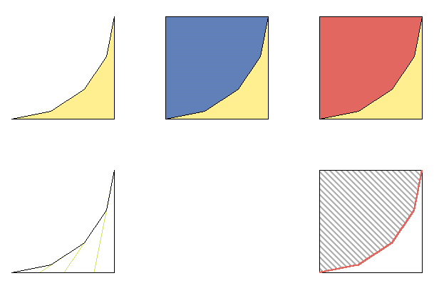

Semisolid
Semisolid brushes are a type of additive brush. They are coloured pink in UnrealEd. They can only be additive, never subtractive.
They don't cut up the BSP so they can't cause BSP errors in solid geometry but they have problems of their own.
Adding Semisolids
There are two methods of inserting a semi solid brush into a map:
- With the red builder brush molded into shape, use the Add Special button
- Any brush can be converted into a semisolid by :
- Select the brush
- Do Brush Context Menu → Solidity → Semisolid. The brush turns pink (using default colors), indicating it is a semisolid.
Usage
Semisolids are useful for decorative geometry, usually things that the player probably won't touch, such as:
- beams
- light fixtures on walls
- pillars
Some topics that mention using semisolids:
Technical
Semisolids dont cut up the BSP world; they cut up only themselves. They are good for keeping BSP node counts low. Low node counts make a map run faster. Since semis don't cut up the BSP world, they cannot cause BSP errors such as HOM or cratering.
Limitations
Semisolids can sometimes cause errors:
- missing polygons (you can see through it to the subtractive surface behind it)
- missing collision: the surfaces look right, but the player falls through them.
If you get these errors, change your map so the problem brush doesn't touch other semisolids, nonsolids or zone portals. If your semi geometry touches another semi, intersect the touching brushes to make them one brush.
See also:
How Semisolids reduce node count
Here's a simple example of a situation where you'd use a semisolid & why it's good.

|
Let's say you want to round off a corner. You could:
- make a specially-shaped brush and subract it, like the yellow crescent-type shape top left in the diagram. (this would be done by intersection or with the 2D Shape Editor.)
- subtract a small cube and add into it a quarter cylinder. (again, make the quarter-cylinder by intersection or use the tarquin brushbuilders.)
- same as above, but add the cylinder as a semisolid brush.
Methods one and two give the same result. Indeed, the simplest way of doing method 1 is to do method 2, re-make the cube and de-intersect to make the crescent shape. Both of these will produce cuts like the bottom left picture in the BSP. These diagonal cuts (in green) will probably extend into the rest of the area you're working in and maybe further. Diagonal cuts like these that don't lie on whole grid points are a prime cause of BSP holes, and raise the map's node count.
The picture in the bottom right shows what happens with method 3. The original cube isn't filled in: the area shaded in grey is still part of the map. You could walk into the curved wall and see it if you type ghost into the UT console. The engine sees the floor of that cube as a full square, just as if you hadn't added the semisolid. The curved walls (in pink) are placed in front of this, like a fake wall. The engine knows to block players and projectiles on this.
The net result is that the off-grid shapes are kept localised to a small portion of the BSP tree. The BSP at large is still based on cubes with integer points.
Related Topics
Comments
Sudsyman73: so, if making semisolids is easy and doesn't tax the engine as much why would anybody ever use the add button? Should all of the pillars and statues and decorations and whatnot be in semisolid form?
inio: Semisolids are sorta equivalent to static meshes, only they don't get the on-card geometry caching and such. You can't use them to seal off zones (I don't think), and they create overdraw (because they don't cut the polygons they intersect). They're good for pillars and stairs and such. There's lots of semisolids in my CTF-Peach original UT map (availble here) for stars and such. There's still plenty of adds though.
Tarquin: Exactly. You still use adds for all sorts of neat CSG stuff. Also for things players walk on, since semisolids can sometimes be unreliable for this.
Sudsyman73: so use them for surfaces that players/bots will not walk on and pillars and things? What's CSG stuff?
Sobiwan: CSG is added or subtracted brushes that cut up the BSP world.
Sudsyman73: actually, inio, i think you can use semisolids to zone off areas. unless of course once again i have made some obvious mistake...
Tarquin: I'm pretty sure they can't.
inio: He might be right to some extent. If a node is completely contained within a semisolid, it gets put into zone 0, so I think there may be some zoning going on with semisolids.
Ragdoll: Could someone please verify "only things the player wont touch" statement? I use semisolids as much as possible and never see any errors provided they are not touching other semisolids or nonsolids.
zugy: It seems, at least in my experience, if something might cause a bsp error as a solid, but doesn't as a semi, there's a chance the semi won't have collision. But I can't think of a reason to not use a semi if a player might touch something if in testing it has collision.